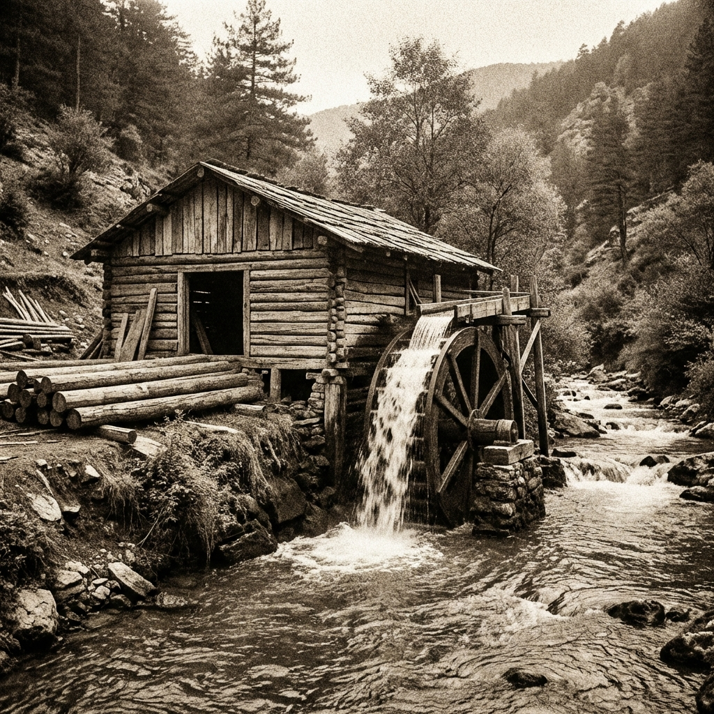

The Tever family entered the trade in the early 20th century when Yahya Tever established one of the region's first water-powered lumber workshops in Kanlıçay village. Harnessing the hydraulic force of Anatolia's rivers, this workshop laid the foundation for a century of commerce.

We started as manufacturers in the early 1900s. Today, we use that deep production know-how to source only the best materials for our partners. We don't just buy and sell; we audit the quality like producers.
Our heritage is built on a fundamental understanding of wood as a material. Operating at the intersection of industry, trade, and culture, we view our long-standing presence not just as history, but as a responsibility.
Consistent delivery for global B2B operations.
100+ years of technical wood knowledge.
Supporting art through Tever Sanat.